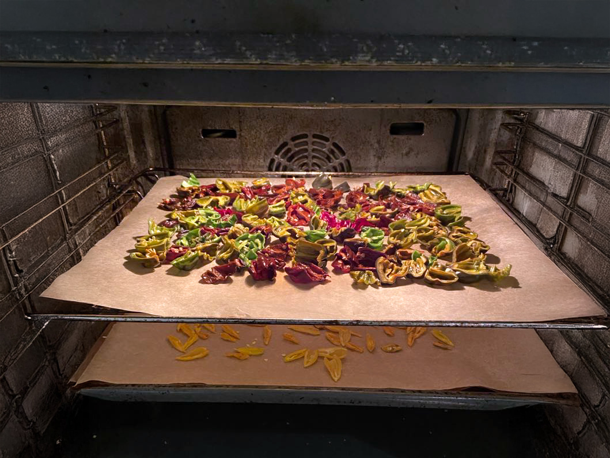

Så, vand, høst, nyd
Gør din altan, have eller vindueskarm til en grøn oase af smag og selvforsyning
At dyrke dine egne grøntsager og bær kræver hverken meget plads eller erfaring – kun lysten til at komme i gang. Med enkle greb kan du få spirer i vindueskarmen, chili på altanen og solmodne bær i baghaven. Det handler om at komme tættere på naturen, finde ro i processen – og nyde resultatet på tallerkenen.
Dyrk din egen lykke
